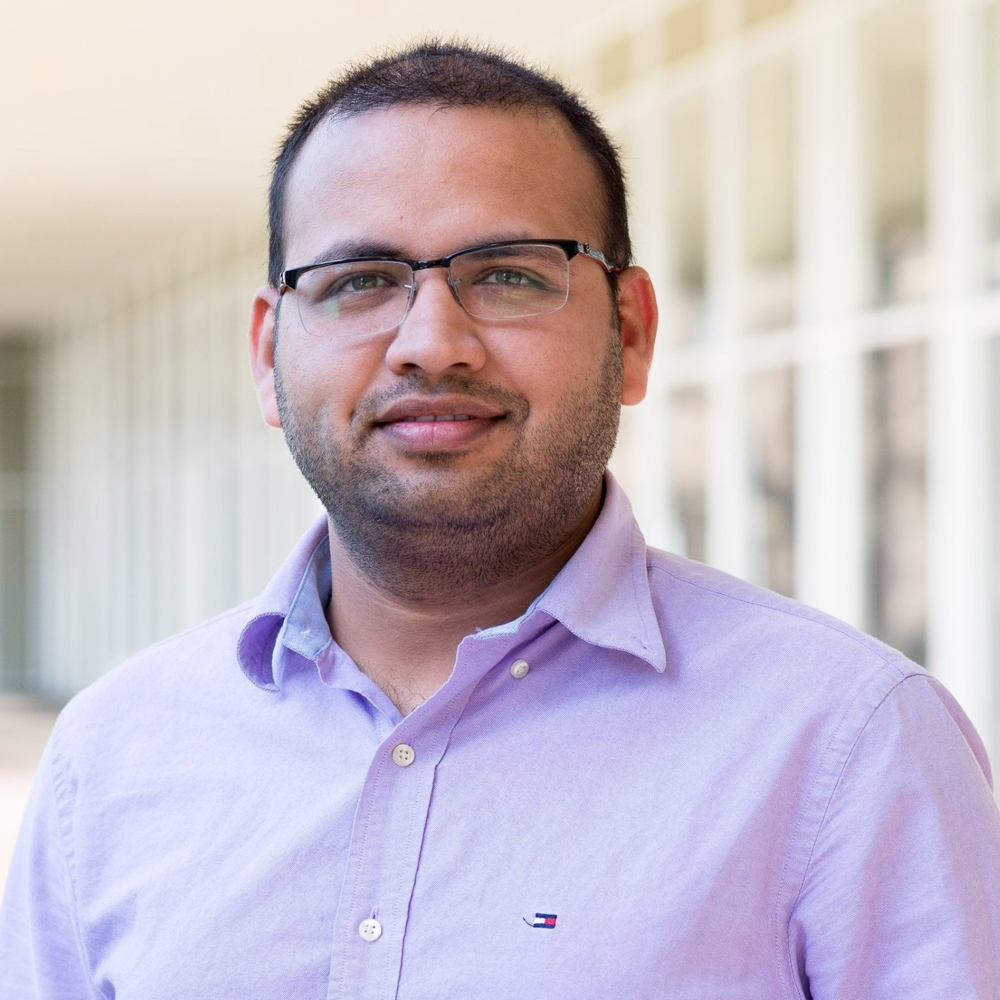

  <div class="row">
  <div class="col-lg-3 text-center">
 

  <p class="text-center">Email: cse dot puneet at gmail dot com</p>
  </div>


  
  <div class="col-lg-9 px-font text-justify">

<!--p><b>Advisor: </b> <a href="http://web.engr.illinois.edu/~croy/" rel="nofollow">Romit Roy Choudhury</a> </p>
<p> <b>Thesis Title: <a href="dissertation.pdf">Practical Architectures for Fused Visual and Inertial Mobile Sensing</a>
<p><b>Thesis Committee: </b> <a href="http://www.cs.duke.edu/~bmm/" rel="nofollow">Bruce Maggs</a>, <a href="http://www.cs.duke.edu/~lpcox/">Landon Cox</a>, and <a href="http://researcher.watson.ibm.com/researcher/view.php?person=us-jmanweiler"> Justin Manweiler</a-->


<!--p>Received M.S. (2013) from <a href="http://duke.edu">Duke</a> in <a href="http://cs.duke.edu">Computer Science</a>, M.Tech (2009) and B.Tech (2008) from <a href="http://iitkgp.ac.in">IIT
Kharagpur</a> in <a href="http://cse.iitkgp.ac.in" rel="nofollow"> Computer Science and Engineering</a>. I was a research intern at IBM T.J. Watson in the summer of 2012 and 2013. I was a senior member of technical staff at Adobe and Oracle between 2009-2011. During my undergraduate, I interned at Oracle (2008) and <a href="http://nsl.cs.usc.edu/">Networked Systems Lab, USC</a> under <a href="http://sruti.usc.edu/">Professor Ramesh Govindan</a> (2007).</p-->

<h2 class="title title01"> Profile Highlights ..</h2>
<ul>
<li> Principal Software Engineer, Roblox, Content Safety, 2023-Current.
<li> Software Engineer, Google Cloud AI, Ads Integrity, Translate, 2018-2023.
<li> Senior Research Scientist at Hewlett-Packard Labs, 2015-2018.
<li> Research intern at IBM T.J. Watson in the summer of 2012 and 2013
<li> Senior member of technical staff at Adobe and Oracle (2009-2011)
<li> UG intern at Oracle (2008) and <a href="http://nsl.cs.usc.edu/">Networked Systems Lab, USC</a> under <a href="http://sruti.usc.edu/">Ramesh Govindan</a> (2007)
</ul>

<h2 class="title title01"> Education </h2>
<ul>
<li> Ph.D. and M.S. in <a href="http://cs.duke.edu">CS</a> from <a href="http://duke.edu">Duke</a>, advised by <a href="http://croy.web.engr.illinois.edu/">Romit Roy Choudhury</a> 
<li> M.Tech and B.Tech in <a href="http://cse.iitkgp.ac.in" rel="nofollow">CS</a>  from <a href="http://iitkgp.ac.in">IIT Kharagpur</a> 
</ul>
    
  </div>


  </div>
  <!--div class="row px-font" >

   <div class="col-lg-3">
   </div>
  <div class="col-lg-9">

<h2 class="title title01"> Ph.D. Progress ..</h2>
         <ul>
<li> <b>Runner-up, MobiCom 2015 SRC,</b> for Poster "User Location Fingerprinting at Scale"
<li> I have successfully defended my PhD on August 24, 2015 </li>
<li> I am <b>co-chairing <a href="http://synrg.csl.illinois.edu/s3">S<sup>3</sup> workshop</a></b> at <a
href="http://www.sigmobile.org/mobicom/2015/workshops.html"> MobiCom 2015</a>. Please
consider submitting.
<li> <b>Best Demo Award</b> at  <a href="http://www.hotmobile.org/2015/">HotMobile 2015</a>
<li> <b>OverLay: Practical Mobile Augmented Reality</b> accepted in <a
href="http://sigmobile.org/mobisys/2015/">MobiSys 2015 </a>
<li> Travel Awards for attending <a
href="http://www.sigmobile.org/mobisys/2015/index.php"> MobiSys 2015</a>, <a href="http://www.hotmobile.org/2015/">HotMobile 2015</a>

<li>Awarded <a href="http://gradschool.duke.edu/financial-support/find-funding/summer-research-fellowship-third-year-phd-students-and-beyond">Summer Research Fellowship 2015</a></li>


</ul>
<a id="toggleButton" onclick="toggleText();" href="javascript:void(0);">See More ...</a>

  </div-->


